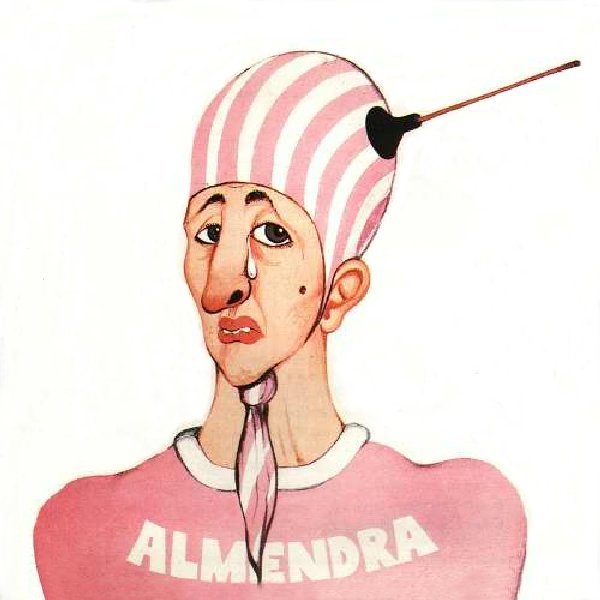
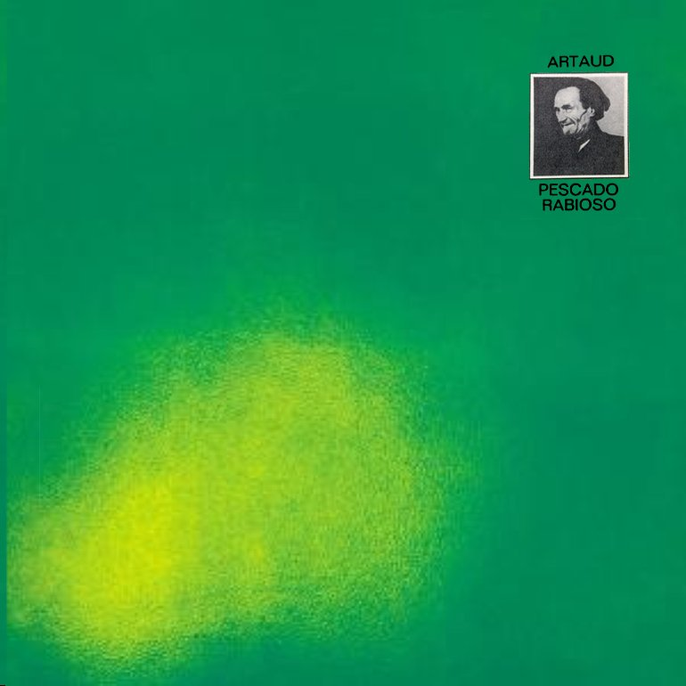
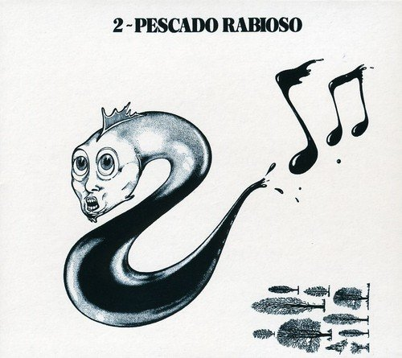
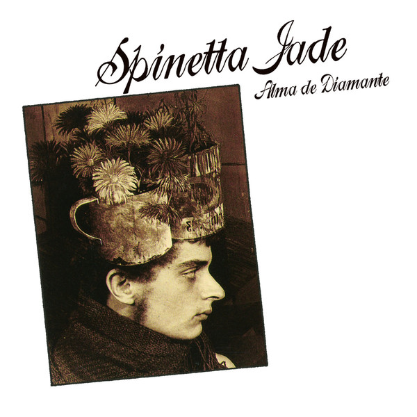

<!DOCTYPE html>
<html><!DOCTYPE html>
  <html>
    <head>
      <title>Spinetta</title>
      <meta charset="utf-8">
      <meta http-equiv="X-UA-Compatible" content="IE=edge">
      <meta name="viewport" content="width=device-width, maximum-scale=1.0, user-scalable=no">
      <link rel="stylesheet" href="https://fonts.googleapis.com/css?family=Lato:400,400i,700,700i|Oswald:400,500,600,700&amp;display=swap">
      <link rel="stylesheet" href="../css/spinetta.css">
      <script src="https://kit.fontawesome.com/552ebddad2.js"></script>
    </head>
    <body></body>
  </html>
  <body>
    <header class="header--principal">
      <div class="logo logo--header"></div>
      <nav class="nav--header">
        <ul>
          <li><a href="#">almendra</a></li>
          <li><a href="#">invisible</a></li>
          <li><a href="#">pescado</a></li>
          <li><a href="#">jade</a></li>
          <li><a href="#">solista</a></li>
        </ul>
      </nav><a class="header__busqueda" href="#"><i class="fas fa-search"></i><span>Search</span></a>
    </header>
    <main class="contenedor--home"><a class="caja--con-fondo caja--grande">
          <div class="caja__imagen"></div>
          <div class="caja--con-fondo__contenido"><span class="caja--con-fondo__categoria">Eterno</span>
            <h2>Luis Alberto Spinetta</h2>
            <p>Multifacético artista argentino, cantante, intelectual, guitarrista, poeta, escritor, dibujante, productor discográfico, compositor, considerado uno de los más importantes y respetados músicos de Latinoamérica.</p>
          </div>
            <div class="caja--con-fondo__stats">
              <ul>
                <li><i class="fas fa-share"></i><span>275</span></li>
                <li><i class="fas fa-eye"></i><span>275</span></li>
                <li><i class="fas fa-comment-alt"></i><span>12</span></li>
              </ul>
            </div></a><a class="caja--con-fondo caja--pequena caja-rdr2">
          <div class="caja__imagen"></div>
          <div class="caja--con-fondo__contenido"><span class="caja--con-fondo__categoria">Almendra</span>
            <h2>Considerado el sexto mejor álbum del rock argentino </h2>
          </div>
            <div class="caja--con-fondo__stats">
              <ul>
                <li><i class="fas fa-share"></i><span>275</span></li>
                <li><i class="fas fa-eye"></i><span>275</span></li>
                <li><i class="fas fa-comment-alt"></i><span>12</span></li>
              </ul>
            </div></a>
      <div class="banner--homepage">
        <h3>Los últimos días del genio:</h3>
        <p>Spinetta fue desde muy joven un fumador compulsivo y la asociación del tabaquismo y el cáncer de pulmón que causó su muerte, también fue objeto de debate público.</p><a class="button">Leer mas</a>
      </div><a class="caja--con-fondo caja--pequena caja-artaud">
          <div class="caja__imagen"></div>
          <div class="caja--con-fondo__contenido"><span class="caja--con-fondo__categoria">Artaud</span>
            <h2>Una de las obras culminantes de la música latinoamericana</h2>
          </div>
            <div class="caja--con-fondo__stats">
              <ul>
                <li><i class="fas fa-share"></i><span>275</span></li>
                <li><i class="fas fa-eye"></i><span>275</span></li>
                <li><i class="fas fa-comment-alt"></i><span>12</span></li>
              </ul>
            </div></a><a class="caja--con-fondo caja--pequena caja-pescado2">
          <div class="caja__imagen"></div>
          <div class="caja--con-fondo__contenido"><span class="caja--con-fondo__categoria">Pescado 2</span>
            <h2>&quot;Este es un álbum doble. Se compone entonces de 2 discos. Uno se llama Pescado, otro se llama 2.&quot;</h2>
          </div>
            <div class="caja--con-fondo__stats">
              <ul>
                <li><i class="fas fa-share"></i><span>275</span></li>
                <li><i class="fas fa-eye"></i><span>275</span></li>
                <li><i class="fas fa-comment-alt"></i><span>12</span></li>
              </ul>
            </div></a><a class="caja--con-fondo caja--pequena caja-AlmaDiamante">
          <div class="caja__imagen"></div>
          <div class="caja--con-fondo__contenido"><span class="caja--con-fondo__categoria">Jade</span>
            <h2>Spinetta Jade actuó durante 1980 y 1981 paralelamente a Almendra</h2>
          </div>
            <div class="caja--con-fondo__stats">
              <ul>
                <li><i class="fas fa-share"></i><span>275</span></li>
                <li><i class="fas fa-eye"></i><span>275</span></li>
                <li><i class="fas fa-comment-alt"></i><span>12</span></li>
              </ul>
            </div></a><a class="caja--con-fondo caja--mediana caja-multiple">
          <div class="caja__imagen"></div>
          <div class="caja--con-fondo__contenido"><span class="caja--con-fondo__categoria">En la cima</span>
            <h2>En el podio de los grandes de la hitoria, inspiración para las nuevas generaciones</h2>
          </div>
            <div class="caja--con-fondo__stats">
              <ul>
                <li><i class="fas fa-share"></i><span>275</span></li>
                <li><i class="fas fa-eye"></i><span>275</span></li>
                <li><i class="fas fa-comment-alt"></i><span>12</span></li>
              </ul>
            </div></a>
      <div class="sidebar--listado">
        <h3>Noticias Destacadas</h3>
        <ul>
            <li><a href="#"><span class="sidebar--listado__numero">1</span><span class="sidebar--listado__titulo">La amistad entre Vilas y Spinetta: del disco grabado en Nueva York al lazo familiar para toda la vida</span></a></li>
            <li><a href="#"><span class="sidebar--listado__numero">2</span><span class="sidebar--listado__titulo">Vera Spinetta habla de su disco debut: &quot;Decidí experimentar con mi voz&quot;</span></a></li>
            <li><a href="#"><span class="sidebar--listado__numero">3</span><span class="sidebar--listado__titulo">Día de la Música: los artistas recomiendan sus discos favoritos</span></a></li>
        </ul>
      </div>
    </main>
    <footer class="footer--principal">
      <div class="logo logo--footer"></div>
      <nav class="nav--footer">
        <ul>
          <li><a href="#">Almendra</a></li>
          <li><a href="#">Invisible</a></li>
          <li><a href="#">Pescado</a></li>
          <li><a href="#">Jade</a></li>
          <li><a href="#">Solista</a></li>
        </ul>
      </nav>
      <div class="nav--social">
        <ul>
          <li>Siguenos</li>
          <li><a href="#"><i class="fab fa-instagram"></i></a></li>
          <li><a href="#"><i class="fab fa-pinterest"></i></a></li>
          <li><a href="#"><i class="fab fa-twitter"></i></a></li>
          <li><a href="#"><i class="fab fa-facebook-f"></i></a></li>
        </ul>
      </div>
    </footer>
  </body>
</html>